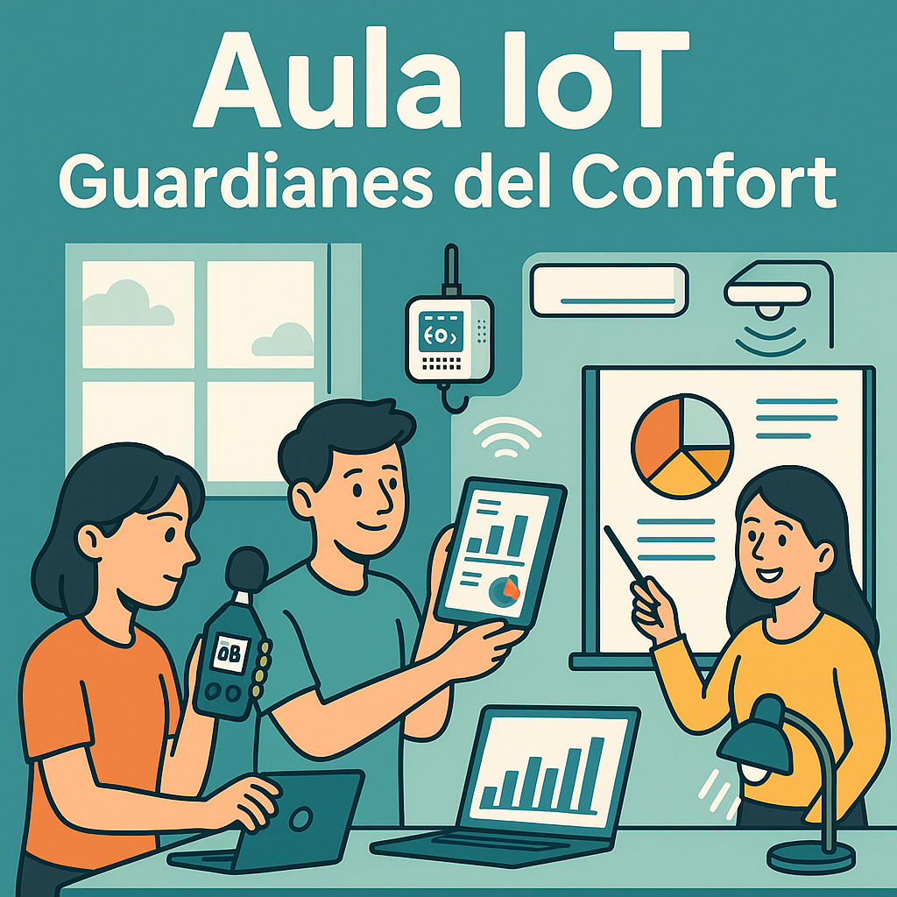

Webquest para Tecnología e Ingeniería I (1º Bach) ·
Monitorización de aula con sensórica IoT
Introducción01
En vuestro centro se ha observado que algunas aulas se
calientan demasiado, hay ruido en ciertos momentos y no
siempre se ventila lo suficiente. El equipo directivo
quiere tomar decisiones basadas en datos reales,
no en opiniones.
Sois el equipo de tecnólogos del centro y vuestra
misión será diseñar una pequeña solución IoT para medir las condiciones del aula (CO₂, temperatura, luz,
ruido) y presentar una propuesta de mejora que
pueda aplicarse de verdad.
Al final tendréis que demostrar que sabéis recoger
datos, interpretarlos y comunicarlos de forma
clara al resto de la comunidad educativa.

Tarea02
Al finalizar la webquest debéis entregar:
Informe breve (1-2 páginas) con los datos
recogidos o de ejemplo, su interpretación y
conclusiones.
Propuesta de mejora del aula (ventilación,
carteles de silencio, iluminación responsable…).
Presentación (diapositivas o póster digital)
para explicar la solución IoT.
Reparto de roles dentro del grupo.
Organización del grupo: 3-4 estudiantes.
Investigador/a
Busca información en los recursos propuestos.
Técnico/a IoT
Se centra en sensores, placa y montaje.
Analista de datos
Pasa los datos a hoja de cálculo y hace
gráficos.
Comunicador/a
Prepara la presentación final.
Proceso03
Seguid los pasos en orden. Cada tarjeta indica qué hay
que hacer, quién lo hace y qué debe quedar hecho antes
de pasar al siguiente paso.
1
Entender el problema (≈30 min)
Leer los recursos sobre ventilación/calidad del
aire y anotar por qué es importante medir CO₂,
temperatura y ruido en el aula.
Roles: Investigador/a: resume en 4-5 líneas qué
dice la guía. Comunicador/a: redacta el párrafo del
problema.
Debe quedar: 1 párrafo tipo “Nuestro aula
puede tener mala calidad de aire porque… y lo
vamos a demostrar midiendo”.
2
Conocer la tecnología (≈40 min)
Revisar cómo una placa tipo ESP32 o similar
puede leer un sensor (DHT22, luz, etc.) y qué
datos salen.
Roles: Técnico/a IoT: lista qué sensor mide cada
variable. Investigador/a: busca en los recursos
reales una frase que lo justifique.
Debe quedar: tabla mini “variable →
sensor → unidad → por qué la medimos”.
3
Diseñar la recogida de datos (≈30-40 min)
Decidir qué se mide, cada cuánto y durante
cuánto. Si no hay datos reales, pasar a la hoja
los datos de ejemplo del profesor.
Roles: Analista de datos: crea la hoja
(fecha/hora, variable 1, variable 2,
observaciones). Comunicador/a: explica de dónde salen los
datos.
Debe quedar: hoja con 8-10 registros sin
huecos y 2-3 observaciones (“ventanas cerradas”,
“examen”...).
4
Analizar e interpretar (≈30 min)
Crear al menos un gráfico y leerlo: localizar
cuándo sube/baja y relacionarlo con lo que
pasaba en el aula.
Roles: Analista de datos: genera el gráfico y
marca el punto problemático. Investigador/a: enlaza con la guía (“si
supera X ppm → ventilar”).
Debe quedar: 2-3 conclusiones claras
sobre momentos de mala ventilación o ruido.
5
Proponer mejoras (≈20 min)
Redactar 2-3 medidas que el centro pueda aplicar
mañana mismo (ventilar al cambio, cartel de
silencio, sensor fijo...).